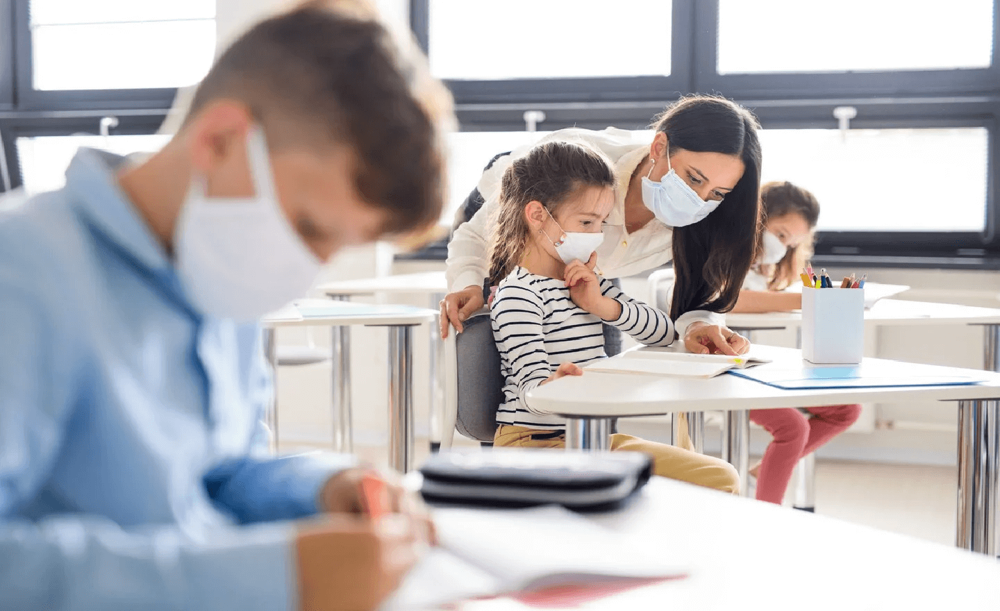
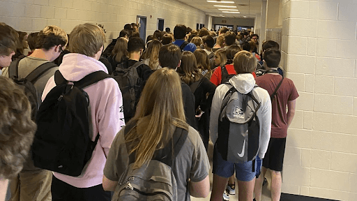

Online learning vs. Physical learning
Patrick Nguyen. 8/12/2020

Students participate in physical learning while following the health guidelines for safety. (iStock)
Students participate in physical learning while following the health guidelines for safety. (iStock)
With the school year starting up again, many schools are planning to start with distanced learning otherwise known as online learning. However, many other schools who have smaller class sizes, are looking at in-classroom learning. This has been the subject of debate since the COVID-19 pandemic struck America several months ago and has sparked a divide between school districts. Let’s discuss the risks and harms to each mode of learning and the impact to millions of students across the U.S.
The Argument for Physical Learning
The traditional learning style has always been classroom learning and it would be a major setback if we were to change this. According to the Centers for Disease Control and Prevention (CDC), online learning poses a large risk to learning and a loss in productivity. This is challenging especially for students with learning disabilities who require more attention in the curriculum. Teachers would not be able to provide as much attention to these students because of the virtual format.
Additionally, we see a socioeconomic disparity between communities during the pandemic. For lower-income students, technology or the internet may not be as accessible compared to students with wealthier backgrounds. Studies from Brown and Harvard University show that online learning is more difficult for those living in low income zip codes. Researchers analyzed the productivity of 800,000 students before and after mandatory quarantine using an online math program called Zearn. They found that although all students declined in progress during quarantine, it was more prominent in low-income communities. This is extremely dangerous because a wealthier student could have access to online tutoring, internet, and books whereas an underprivileged student does not have these opportunities. This widens the gap between the poor and the rich, setting back our education system even farther than it already has.
Finally, there are health risks to online learning. A study from the University of Toledo states: “Progressive destruction of light-detecting cells in the eyes due to prolonged exposure to blue light could therefore contribute to age-related macular degeneration, which is a leading cause of blindness”. When children are in online school, there is more exposure to blue light leading to a higher chance of blindness. This is dangerous for today’s youth and their development especially since many students have phones and computers at home already. Although online learning seems like a safer method, is it worth the risk to harm the development of our next generation?
In light of the COVID-19 pandemic, online learning has been in place for several months and has kept many students safe from the harmful virus. As politicians and educators are debating what should be the mode of learning, the recent COVID-19 cases in a school in Georgia act as proof that classroom learning is not the way to go. According to USA Today, 250 students and staff were asked to quarantine after 13 people tested positive for COVID-19. This incident was only one week after school started and the picture below, from another school in Georgia, illustrates a lack of social distancing and violation of health guidelines.

Students walk through the hallway of North Paulding High School (in Georgia) in August. (Hannah Watters)
Students walk through the hallway of North Paulding High School (in Georgia) in August. (Hannah Watters)
This poses the question if districts will enforce strict social distancing guidelines if schools do reopen with in-classroom learning. According to a study from JAMA Pediatrics, they speculate that children can carry COVID-19 as much as infected adults and children under five can carry the virus 100 times more than adults. Although it does not go into the question if children can spread the disease, it should still be considered an argument in the debate. Also, there is no guarantee that young children will even follow health regulations. The virus is still spreading. Although the education and development of today’s students are important, their safety and lives should be a priority.
As the school year is nearing, many schools are choosing online learning as their format. What harms and risks will we see in the upcoming year for students and how will this affect our education system? Because this virus has already caused so much chaos and destruction, it is difficult to make a decision for our future. But what needs to remain important is everyone’s safety so that we can have a chance to rebuild once we defeat COVID-19.
Cover Photo: (Comprehensive Center Network)

Patrick is a rising junior at Sage Hill School who enjoys studying cosmetic science and playing tennis. Through InterSTEM, Patrick aspires to help underrepresented communities have access to STEM education and stimulate their curiosity for science.